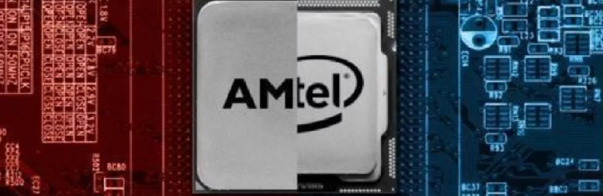

Procesor intel czy AMD
Jeszcze kilka lat temu AMD było w bardzo trudnej sytuacji zarówno na rynku procesorów, jak i kart graficznych. Firma potocznie nazywana „Czerwonymi” nie była w stanie rywalizować ani z Intelem, ani z Nvidią. Tak do gier, jak i rozwiązań profesjonalnych nie było lepszych procesorów niż Intel Core. Ale mówimy o stanie sprzed kilku lat. Dzisiaj sytuacja wygląda zgoła odmiennie. Niemal na każdym kroku to właśnie AMD jest polecane jako firma produkująca w tym momencie lepsze lub porównywalne CPU, ale w niższych cenach. Dlatego Ryzeny rekomendowane są dla graczy oraz profesjonalistów, bo nawet jeśli Intel w jakimś aspekcie wypada lepiej, to jest droższy, a różnice w wydajności są nieznaczne. To podejście w myśl zasady – skoro efekt jest podobny, to po co przepłacać i rzeczywiście trudno dyskutować wobec takich argumentów.
Czy nadal AMD jest najlepszym wyborem zarówno dla graczy, profesjonalistów, jak i do zwykłego użytku domowego?
Najpopularniejsze procesory, czyli jakie?
Na początek warto byłoby się zastanowić, jakie procesory są aktualnie najchętniej przez nas kupowane. Dlaczego? Odpowiedź jest prosta – aby to właśnie na ich przykładzie sprawdzić, jak dzisiaj wypada porównanie Czerwonych i Niebieskich. Gdybym sam miał stawiać, to prawdopodobnie wskazałbym modele ze średniej półki, czyli serie AMD Ryzen 5 oraz Intel Core i5. Logika sugeruje, że to właśnie one cieszą się największym powodzeniem, bo przy rozsądnych cenach oferują zadowalająca wydajność w większości zastosowań, czyli są dokładnie tym, czym powinna być średnia półka. W skrócie – mają najlepszy stosunek wydajności do ceny. Jednak zdaję sobie sprawę, że niewiele osób – nawet jeśli są podobnego zdania co ja – uwierzy mi po prostu na słowo. Na szczęście jest kilka prostych sposobów, aby sprawdzić popularność CPU i to właśnie z nich postanowiłem skorzystać.
AMD vs Intel?
Zacznijmy od czerwca 2020 roku. Patrząc na wykres na Ceneo wyraźnie widać, że wtedy procesor AMD Ryzen 5 3600 kosztował zaledwie 775 złotych. A jak wypadał w tym zestawieniu Intel Core i5-10400F? W czerwcu, według Ceneo, kosztował on najmniej 849 złotych, więc był o kilkadziesiąt złotych droższy od swojego konkurenta. Jednak tu wkracza kwestia tego co zamierzacie robić z pomocą procesora. Według testów procesory intela są bardziej wydajne w przypadku grania w gry zaś procesory amd stworzone są do pracy w programach między innymi renderującymi modele 3d